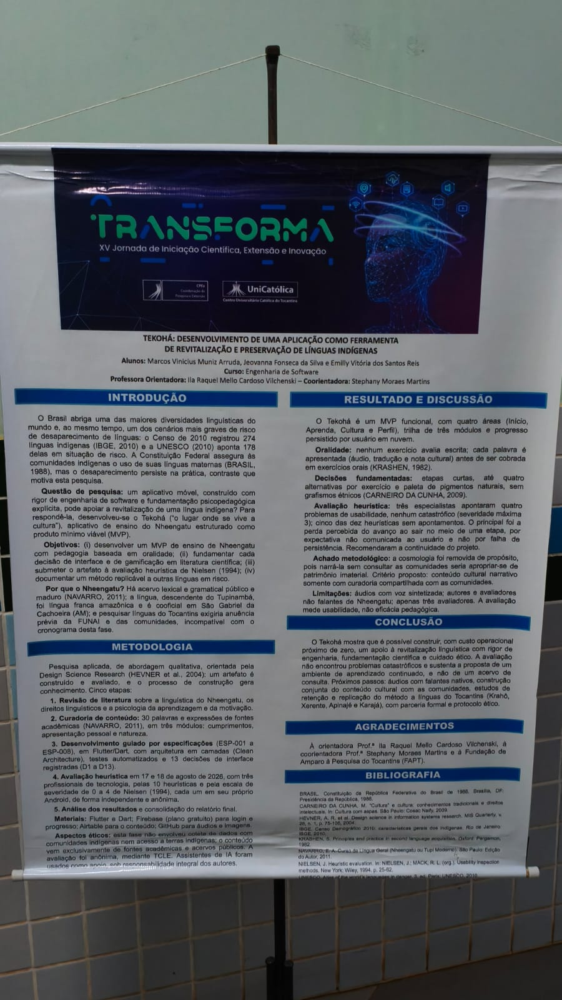

Cobertura dos projetos do evento
Este portal reúne a cobertura feita pelo trio Carlos Henrique Cardoso da Silva Rocha , Daniel Carvalho Silva e fernando alves ferreira , do curso de Engenharia de Software. Cada matéria apresenta um projeto visitado no evento, com contexto, análise e fotos feitas pela equipe.
O trio
O Trio é Carlos Henrique Cardoso da Silva Rocha, Daniel Carvalho Silva e fernando alves ferreira e todos os projetos foram autorizados a publicar.
O evento
O evento aconteceu na cidade de Palmas, Tocantins no dia 07/10/2026 na universidade Católica de Palmas no periodo noturno.
As matérias

TEKOHÁ: DESENVOLVIMENTO DE UMA APLICAÇÃO COMO FERRAMENTA DE REVITALIZAÇÃO E PRESERVAÇÃO DE LÍNGUAS INDÍGENAS
O Tekohá é um aplicativo para começar o nheengatu em três módulos curtos, com áudio e progresso na nuvem. Nesta fase o conteúdo veio de fontes acadêmicas; áudios de falantes nativos e o trabalho com as comunidades ficam para a etapa seguinte.
Ler matéria

ANÁLISE ECONÔMICO-FINANCEIRA DO USO DE LLMS EM EMPRESAS: O EQUILÍBRIO ENTRE CUSTO, DESEMPENHO E QUALIDADE DAS RESPOSTAS
O estudo compara seis artigos recentes e descreve um roteador que manda tarefas simples ao modelo menor e reserva o modelo maior para o que pede mais qualidade. A revisão aponta queda de custo sem abrir mão do desempenho, e recomenda testar a estratégia em cada empresa.
Ler matéria

SISTEMA DE GESTÃO DE VENDAS: PROTOTIPAÇÃO DE CATÁLOGO DIGITAL, CONTROLE DE ESTOQUE E PAGAMENTO PIX
O projeto apresenta o desenvolvimento de um sistema de gestão de vendas com catálogo digital, controle de estoque e pagamento via Pix. A proposta busca facilitar as vendas, organizar os produtos e tornar o processo de compra mais rápido e eficiente.
Ler matéria